ДЕПАРТАМЕНТ
СТРОИТЕЛЬСТВА
НАУЧНО-ТЕХНИЧЕСКОЕ УПРАВЛЕНИЕ
НИЦ "СТРОИТЕЛЬСТВО"
ВЕДОМСТВЕННЫЕ СТРОИТЕЛЬНЫЕ НОРМЫ
ПРОЕКТИРОВАНИЕ
И ОСНОВНЫЕ
ПОЛОЖЕНИЯ ТЕХНОЛОГИЙ ПРОИЗВОДСТВА
ФИБРОБЕТОННЫХ КОНСТРУКЦИЙ
ВСН 56-97
Москва - 1997
Настоящие строительные нормы разработаны НИИЖБом, МНИИТЭПом и фирмой "Фибробетон" в соответствии с Постановлением Правительства Москвы № 992 от 1 ноября 1994 г. "О комплексной программе по разработке и выпуску Московских городских строительных норм и правил, отраслевых стандартов и технических условий для строительства в г. Москве" по заданию Научно-технического управления Департамента строительства. Нормы подготовлены и вводятся впервые.
Разработке 1-ой редакции норм предшествовало обобщение отечественного и зарубежного опыта исследований, проектирования и технологии изготовления, устройства и возведения стеклофибробетонных, сталефибробетонных, базальтофибробетонных элементов, конструкций и сооружений.
При подготовке норм учтены основные положения действующих нормативных документов по проектированию и изготовлению бетонных, железобетонных, армоцементных и сталефибробетонных конструкций (СНиП 2.03.01-84; СНиП 2.03.03-85; СНиП 2.03.11-85; СНиП 10-01-94 и др.) а также рекомендаций, стандартов, технических условий и регламентов на материалы и технологию изготовления конструкций, приведенные в приложениях.
Настоящие ВСН согласованы с ведущими Научно-исследовательскими, проектными и производственными организациями.
В разработке ВСН участвовали: от НИИЖБ - к.т.н. Волков И. В., д.т.н. Хайдуков Г. К., инж. Газин Э.М., от МНИИТЭП - д.т.н. Жуковский Э. З., к.т.н. Шабля В. Ф., от фирмы "Фибробетон" - к.т.н. Анацкий Ф. И., Рудой В. М.
Нормы разработаны при участии Департамента строительства Правительства Москвы (к.т.н. Дмитриев А. Н.) и НИЦ "Строительство" (к.т.н. Гурьев В. В.).
Научное редактирование ВСН выполнено к.т.н. Волковым И. В. и к.т.н. Анацким Ф. И.
|
Департамент строительства |
Ведомственные строительные нормы |
ВСН 56-97 |
|
Научно-техническое управление |
Ведомственные строительные нормы по проектированию и основным положениям технологий производства фибробетонных конструкций |
Вводятся впервые |
ЧАСТЬ 1. ПРОЕКТИРОВАНИЕ СТЕКЛОФИБРОБЕТОННЫХ КОНСТРУКЦИЙ.
1.1. ОБЩИЕ УКАЗАНИЯ.
1.1.1. Настоящие нормы распространяются на проектирование элементов несущих и ограждающих конструкций и изделий из стеклофибробетона для зданий и сооружений различного назначения.
Стеклофибробетон является разновидностью фибробетона и изготавливается из мелкозернистого бетона (бетон-матрица) и армирующих его отрезков стекловолокна (фибр), равномерно распределенных по объему бетона изделия или отдельных его частей (зон). Совместность работы бетона и фибр обеспечивается за счет сцепления по их поверхности.
1.1.2. Нормы содержат указания по проектированию стеклофибробетонных конструкций, предназначенных для работы при систематическом воздействии температуры не выше 50 °С и не ниже минус 70 °С.
При проектировании стеклофибробетонных конструкций, предназначенных для работы в условиях с систематическим воздействием температуры выше 50 °С, а также агрессивных по отношению к стеклофибробетону сред, необходимо учитывать дополнительные требования, предъявляемые к таким конструкциям соответствующими нормативными документами.
|
Внесены НИИЖБом, МНИИТЭПом, фирмой "Фибробетон" |
Утверждены Научно-техническим управлением Департамента
строительства |
Срок введения в действие |
По показателям прочности, морозостойкости и водонепроницаемости приняты классы бетона в соответствии с ГОСТ 25192, ГОСТ 26633, СНиП 2.03.01 и СТ СЭВ 3978.
Основные буквенные обозначения, принятые согласно СТ СЭВ 1565, и используемая в настоящих нормах терминология, приведены в справочном приложении 1.1.
1.1.3. Нормы предназначены для проектирования стеклофибробетонных конструкций и стеклофибробетонных конструкций с комбинированным армированием согласно классификации по п. 1.1.5.
Основные положения.
1.1.5. Стеклофибробетонные конструкции в зависимости от их армирования подразделяют на конструкции:
с фибровым армированием - при их армировании только фибрами из стекловолокна, равномерно распределенными по объему бетона всего элемента или его части;
с комбинированным армированием - при их армировании фибрами из стекловолокна, равномерно распределенными по объему (сечению) элемента, в сочетании со стержневой, проволочной стальной арматурой (или стержневой стеклопластиковой арматурой при соответствующем обосновании и согласовании с НИИЖБ).
1.1.6. Стеклофибробетонные конструкции, аналогично железобетонным согласно СТ СЭВ 1505, должны быть обеспечены с требуемой надежностью от возникновения всех видов предельных состояний расчетом, выбором материалов, назначением размеров и конструированием.
1.1.7. Конструкции из стеклофибробетона на портландцементе и глиноземистом цементе могут применяться в неагрессивных и агрессивных средах при соблюдении требований СНиП 2.03.11 и указаний п. 1.1.8 настоящих норм.
1.1.8. Степень агрессивного воздействия сред для стеклофибробетонных конструкций с фибровым армированием принимается по указаниям пп. 2.4-2.8 СНиП 2.03.11 как для конструкций из бетона-матрицы.
Для стеклофибробетонных конструкций с комбинированным армированием степень агрессивного воздействия сред принимается по указаниям пп. 2.4-2.8 СНиП 2.03.11 как для конструкций из железобетона.
Толщину защитного слоя фибробетона для рабочей стальной стержневой или проволочной арматуры в сборных конструкциях и изделиях рекомендуется принимать уменьшенной по сравнению с требованиями пп. 5.4 и 5.5 СНиП 2.03.03, но не более чем на 12 мм соответственно п. 2.19 СНиП 2.03.11.
1.1.9. Стеклофибробетон рекомендуется применять в тонкостенных элементах и конструкциях зданий и сооружений, для которых существенно важным является: снижение собственного веса, повышение трещиностойкости, обеспечение водонепроницаемости бетона и его долговечности (в т.ч., в агрессивных средах), повышение ударной вязкости и сопротивления истиранию, наличие радиопрозрачности, а также повышение архитектурной выразительности и экологической чистоты.
1.1.10. Выбор конструктивных решений стеклофибробетонных конструкций выполняется с учетом технико-экономической целесообразности применения таких конструкций в конкретных условиях строительства, максимального снижения их материало-, трудо- и энергоемкости, повышения долговечности и архитектурной выразительности. При этом следует учитывать методы изготовления, монтажа и условия эксплуатации конструкций.
1.1.11. Форма и размеры сечений элементов принимаются исходя из наиболее полного учета свойств стеклофибробетона, возможности заводского механизированного и автоматизированного изготовления, удобства транспортирования и монтажа конструкций.
1.1.12. При проектировании стеклофибробетонных конструкций следует учитывать наиболее эффективные технологии их изготовления (см. часть 2 настоящих норм).
1.1.13. Стеклофибробетон рекомендуется для изготовления конструкций, в которых могут быть наиболее эффектно использованы следующие его технические преимущества по сравнению с бетоном и железобетоном:
- повышенные трещиностойкость, ударная вязкость, износостойкость, морозостойкость и атмосферостойкость;
- возможность использования более эффективных конструктивных решений, чем при обычном армировании, например: применение тонкостенных конструкций, конструкций без стержневой или сетчатой распределительной и поперечной арматуры и др.;
- возможность снижения или полного исключения расхода стальной арматуры, например, в конструкциях с экономической ответственностью;
- снижение трудозатрат и энергозатрат на арматурные работы, повышение степени механизации и автоматизации при производстве фибробетонных конструкций, например, сборных тонкостенных оболочек, складок, ребристых плит покрытий и перекрытий, дорожных покрытий, монолитных и сборных полов промышленных и общественных зданий, конструкций несъемной опалубки и др.;
- возможность применения новых, более производительных приемов формования армированных конструкций, например, пневмонабрызга, погиба свежеотформованных листовых изделий и др.
Рекомендуемая номенклатура эффективных стеклофибробетонных конструкций приведена в справочном приложении 1.2.
1.1.14. Для приготовления стеклофибробетона применяется мелкозернистый бетон (матрица) на мелком плотном заполнителе по ГОСТ 8736, портландцементе по ГОСТ 10178 или глиноземистом цементе по ГОСТ 969, а также модифицированном портландцементе с ультрадисперсной кремнеземной добавкой или ВНВ. Применение других вяжущих допускается при соответствующем обосновании.
Для фибрового армирования матрицы на глиноземистом цементе может использоваться фибра из обычного алюмоборосиликатного стекловолокна по ГОСТ 17139 при соответствующем обосновании.
При экспериментальном и экономическом обосновании и согласовании с НИИЖБ возможно применение фибр из стеклянного волокна со специальными защитными покрытиями.
1.1.17. Стеклофибробетонные элементы с фибровым армированием рекомендуется применять в конструкциях, работающих:
- преимущественно на ударные нагрузки, истирание, продавливание и атмосферные воздействия;
- на сжатие при эксцентриситетах приложения продольной силы, не превышающих величин, указанных в п. 3.3 СНиП 2.03.01 (например, в элементах пространственных покрытий);
- на изгиб при соблюдении условий, исключающих их хрупкое разрушение в конструкциях с экономической ответственностью;
- в условиях, указанных в п. 1.7б СНиП 2.03.01.
1.1.18. Стеклофибробетонные конструкции с комбинированным армированием применяются аналогично обычным или предварительно напряженным железобетонным конструкциям в зданиях и сооружениях, для которых существенное значение имеют снижение собственного веса, уменьшение раскрытия трещин, обеспечение водонепроницаемости, долговечность, стойкость при воздействии ударных нагрузок.
1.1.19. При проектировании сборных стеклофибробетонных конструкций особое внимание необходимо обращать на прочность, долговечность и технологичность соединений и узлов. Соединения и узлы сборных ограждающих конструкций должны удовлетворять также специальным требованиям к этим ограждениям (обеспечивать передачу усилий элементам несущих конструкций, выполнение теплотехнических требований, заданной деформативности, водонепроницаемости и др.).
1.1.20. Для предотвращения появления трещин, местных выколов и других дефектов стеклофибробетонных конструкций или изделий при их подъеме в процессе изготовления, складирования, транспортирования и монтажа следует применять специальные приспособления, в т.ч. беспетлевые захваты стеклофибробетонных конструкций и изделий.
Основные расчетные требования.
1.1.21. Стеклофибробетонные конструкции с фибровым или комбинированным армированием должны удовлетворять требованиям по несущей способности (предельные состояния первой группы) и по пригодности к нормальной эксплуатации (предельные состояния второй группы) согласно СТ СЭВ 1406.
1.1.22. Проектирование конструкций выполняется по методике, аналогичной методике проектирования армоцеметных и сталефибробетонных конструкций с учетом прочностных и деформативных характеристик стеклофибробетона. При проектировании стеклофибробетонных конструкций следует руководствоваться общими положениями СНиП 2.03.01 (пп. 1.1¸1.6, 1.8-1.9, 1.22), СНиП 2.03.03 и настоящими нормами.
1.1.23. Расчет стеклофибробетонных конструкций, в т.ч. с комбинированным армированием, производится по несущей способности (предельные состояния первой группы) и по пригодности к нормальной эксплуатации (предельные состояния второй группы) в соответствии с положениями настоящих норм, учитывающих следующие особенности стеклофибробетонных конструкций:
- дисперсность армирования;
- тонкостенность конструкций;
- уменьшенный (по сравнению с железобетонными конструкциями) защитный слой для стержневой или проволочной арматуры при комбинированном армировании;
- возможное изменение прочности на растяжение стеклофибробетона во времени в зависимости от влажности среды эксплуатации.
1.1.24. Значения нагрузок и воздействий, коэффициентов перегрузок, коэффициентов сочетаний нагрузок, а также разделение нагрузок на постоянные и временные (длительные, кратковременные, особые) должны приниматься в соответствии с требованиями СНиП II-6, с учетом дополнительных указаний СНиП 2.03.01 и пп. 1.12 и 1.13 СНиП 2.03.03.
1.1.25. Трещиностойкость стеклофибробетонных конструкций с фибровым и комбинированным армированием должна отвечать требованиям п. 1.13 СНиП 2.03.03 и настоящих норм.
1.1.26. Категории требований к трещиностойкости стеклофибробетонных конструкций с комбинированным армированием в зависимости от условий их работы и вида арматуры, а также величины предельно допустимой ширины раскрытия трещин приведены в таблице 1.1.
Нагрузки, учитываемые при расчете стеклофибробетонных конструкций с фибровым или комбинированным армированием по образованию и раскрытию трещин, должны приниматься согласно табл. 2 СНиП 2.03.03.
1.1.27. Несущие стеклофибробетонные элементы, как правило, должны выполняться с комбинированным армированием.
Несущие элементы из стеклофибробетона без комбинированного армирования не должны иметь трещин при продолжительном действии нагрузки с коэффициентом перегрузки γ = 1 и удовлетворять требованиям по несущей способности.
1.1.28. Определение прогибов стеклофибробетонных конструкций с комбинированным армированием следует производить согласно положениям СНиП 2.03.01 и указаниям пп. 1.4.9-1.4.14 настоящих норм. Значения предельно допустимых прогибов следует принимать по СНиП 2.03.01.
Расчет прогибов стеклофибробетонных конструкций без комбинированного армирования не производится.
1.1.29. Статический расчет стеклофибробетонных конструкций в виде оболочек и складок следует выполнять как тонкостенных пространственных конструкций. Перераспределение усилий в статически неопределимых стеклофибробетонных конструкциях следует обосновывать экспериментальным путем.
1.1.30. Расстояния между температурно-усадочными швами в стеклофибробетонных конструкциях покрытий и др. следует устанавливать расчетом с учетом требований СНиП 2.03.01.
1.1.31. Средняя плотность мелкозернистого бетона, учитываемая при расчете стеклофибробетонных конструкций, принимается равной 2300 кг/м3. Средняя плотность стеклофибробетона принимается равной 2400 кг/м3. При наличии конкретных данных о средней плотности стеклофибробетона допускается принимать другие значения, обоснованные в установленном порядке.
1.1.32. В рабочих чертежах конструкций из стеклофибробетона следует указывать требования к материалам, а также сведения о технологических приемах изготовления, контроля качества и хранения конструкций.
Дополнительные указания по проектированию предварительно напряженных конструкций.
1.1.33. Предварительно напряженные стеклофибробетонные конструкции следует проектировать в соответствии с требованиями пп. 1.23-1.30 СНиП 2.03.01; пп. 1.21 и 1.25 СНиП 2.03.03 и настоящих норм.
1.1.34. Потери напряжения в предварительно напряженной арматуре для стеклофибробетонных конструкций следует определять по указаниям пп. 1.25-1.27 СНиП 2.03.01 как для конструкций из мелкозернистого бетона.
Потери от усадки стеклофибробетона допускается принимать с коэффициентом 0,9 при соответствующем обосновании.
Дополнительные указания по проектированию изгибаемых трехслойных элементов с эффективным утеплителем и наружными слоями из стеклофибробетона.
1.1.35. Настоящие нормы могут быть использованы при проектировании ограждающих трехслойных элементов, выполняемых с наружными слоями из стеклофибробетона и внутренним слоем - из фибролита по ГОСТ 8928, легкого бетона или плит из ячеистого бетона.
1.1.36. Наружные слои трехслойных элементов принимаются толщиной 15¸30 мм и выполняются из стеклофибробетона на основе мелкозернистого бетона класса не ниже В25 группы А.
1.1.37. Дисперсное армирование выполняется из отрезков щелочестойкого стекловолокна длиной 20¸40 мм, изготавливаемого по ТУ 21-38-233-92.
1.1.38. Внутренний слой толщиной 75-220 мм выполняется из фибролита по ГОСТ 8928 объемной массой не ниже 400, а также из легкого монолитного бетона или плит из ячеистого бетона, отвечающих соответствующим стандартам.
1.1.39. Настоящие указания по расчету распространяются на трехслойные элементы, изготавливаемые методом приформовывания слоев, т.е. с обеспеченным сцеплением слоев стеклофибробетона и внутреннего слоя утеплителя.
1.1.40. При проектировании с целью обеспечения прочности, жесткости и трещиностойкости трехслойных стеклофибробетонных элементов, рассчитываемых по настоящим нормам, следует принимать величину отношения расчетного пролета изгибаемого элемента к его полной высоте не менее 8.
Таблица 1.1
|
Категория требований к трещиностойкости стеклофибробетонных конструкций с комбинированным армированием и предельно допустимая ширина acrc1 и аcrc2, мм, раскрытия трещин при армировании |
|||
|
стержневой классов А-I, А-II, А-III, А-IIIв и А-IV; проволочной классов В-I и Вр-I |
стержневой классов A-V и А-VI; проволочной классов В-II, Вр-II, К-7 и К-9 при диаметре проволоки 4,5 мм и более |
проволочной классов В-II, Вр-II и К-7 при диаметре проволоки 3 мм и менее |
|
|
Элементы: |
|||
|
1. С полностью растянутым или частично сжатым сечением, воспринимающие давление жидкостей или газов |
2-я категория аcrc1 = 0,10 acrc2 = 0,06 |
1-я категория |
1-я категория |
|
2. Эксплуатируемые в отапливаемых зданиях с относительной влажностью внутреннего воздуха помещений выше 75 %, а также на открытом воздухе и в неотапливаемых зданиях в условиях увлажнения атмосферными осадками |
2-я категория acrc1 = 0,12 асrс2 = 0,09 |
1-я категория |
1-я категория |
|
3. Эксплуатируемые в отапливаемых зданиях с относительной влажностью внутреннего воздуха помещений от 60 до 75 % |
2-я категория acrc1 = 0,15 аcrc2 = 0,12 |
2-я категория acrc1 = 0,12 acrc2 = 0,08 |
1-я категория |
|
4. Эксплуатируемые в отапливаемых зданиях с относительной влажностью внутреннего воздуха помещений до 60 % и при отсутствии возможности систематического увлажнения конструкции конденсатом |
2-я категория acrc1 = 0,20 acrc2 = 0,15 |
2-я категория acrc1 = 0,15 асrс2 = 0,10 |
2-я категория acrc1 = 0,07 acrc2 = 0,05 |
1.2. МАТЕРИАЛЫ ДЛЯ СТЕКЛОФИБРОБЕТОННЫХ КОНСТРУКЦИЙ.
Мелкозернистый бетон.
1.2.1. Для стеклофибробетонных конструкций, проектируемых в соответствии с настоящими нормами, следует предусматривать конструкционный мелкозернистый бетон по ГОСТ 26633 средней плотности не менее 2000 кг/м3 на кварцевом песке с крупностью зерен от 1,5 мм до 2,3 мм в соответствии с ГОСТ 8736.
Бетон должен иметь водопоглощение не более 8 % по массе.
1.2.2. Мелкозернистый бетон для стеклофибробетонных конструкций в зависимости от вида и условий их работы предусматривается следующих классов и марок:
а) классов по прочности на сжатие:
бетон группы А (естественного твердения или подвергнутый тепловой обработке при атмосферном давлении, на песке с модулем крупности свыше 2,0 но не более 2,5) - В20, В25, В30, В35, В40;
бетон группы Б (естественного твердения или подвергнутый тепловой обработке при атмосферном давлении, на песке с модулем крупности 2,0¸1,5) - В20, В25, В30 и В35.
Допускается применение бетона промежуточных классов В22,5 и В27,5 при условии, что это приводит к экономии цемента по сравнению с применением бетона соответственно классов В25 и В30 и не снижает других технико-экономических показателей конструкций.
б) классов по прочности на осевое растяжение - Bt 1.6; Bt 2; Bt 2.4; Bt 2.8; Bt 3.2; Вt 3.6; Bt 4;
в) марок по морозостойкости - F50; F75; F100; F150; F200; F250; F300; F400, F500;
г) марок по водонепроницаемости - W4; W6; W8; W10; W12.
1.2.3. В качестве вяжущих для приготовления мелкозернистого бетона стеклофибробетонных конструкций следует применять портландцемент по ГОСТ 10178, глиноземистый цемент по ГОСТ 969 марок не ниже М400, а также добавки микрокремнезема по ТУ 7-249533; ТУ 7-249533-02; ТУ 2-249533-03 или вяжущее низкой водопотребности (ВНВ) по ТУ 21-26-20.
1.2.4. Возраст бетона, отвечающий его классу по прочности на сжатие и осевое растяжение, назначается при проектировании, исходя из возможных реальных сроков фактического загружения конструкций проектными нагрузками, способа возведения и условий твердения бетона. При отсутствии этих данных класс бетона устанавливается в возрасте 28 суток.
Значение отпускной прочности бетона в элементах сборных конструкций назначается в соответствии с указаниями ГОСТ 13015.0 и стандартов или технических условий на конструкции конкретных видов.
1.2.5. Для предварительно напряженных стеклофибробетонных элементов бетон, в котором расположена напрягаемая арматура, принимается класса по прочности на сжатие в зависимости от вида и класса напрягаемой арматуры, ее диаметра и наличия анкерных устройств не ниже, указанного в табл. 8 СНиП 2.03.01.
1.2.6. Минимальные марки по морозостойкости и водонепроницаемости стеклофибробетона в зависимости от условий работы стеклофибробетонных конструкций принимаются в соответствии с указаниями п. 2.9 СНиП 2.03.01 или проектных требований.
1.2.7. Для замоноличивания стыков стеклофибробетонных элементов следует принимать бетон или стеклофибробетон с прочностными характеристиками в зависимости от условий работы соединяемых элементов, но не ниже, чем фибробетона соединяемых элементов.
Нормативные и расчетные характеристики мелкозернистого бетона.
1.2.8. Нормативные и расчетные сопротивления мелкозернистого бетона, а также коэффициенты условий работы принимаются в соответствии с указаниями пп. 2.11-2.13 СНиП 2.03.01.
1.2.9. Значения начального модуля упругости Eb, коэффициента линейной температурной деформации αbt, начального коэффициента поперечной деформации (коэффициента Пуассона) и модуля сдвига стеклофибробетона могут быть приняты как для мелкозернистого бетона в соответствии с указаниями пп. 2.14-2.16 СНиП 2.03.01. Допускается принимать уточненные опытным путем значения этих характеристик при соответствующем обосновании.
Арматура.
ровинга из щелочестойкого (цементостойкого) стекловолокна, выпускаемого по ТУ 21-38-233-92;
- ровинга из алюмоборосиликатного (нещелочестойкого) стекловолокна по ГОСТ 17139.
Длина фибры принимается в зависимости от размеров и армирования конструкций, вида технологического оборудования по приготовлению и укладке стеклофибробетонной смеси.
1.2.11. Для армирования мелкозернистого бетона на портландцементе используется фибра из щелочестойкого стекловолокна.
1.2.12. Фибра из нещелочестойкого (алюмоборосиликатного) стекловолокна может использоваться в случаях армирования бетона (матрицы) на основе глиноземистого цемента, портландцемента с добавкой гипса или микрокремнезема на ограниченный срок службы при соответствующем обосновании.
Использование фибры из алюмоборосиликатного (нещелочестойкого) стекловолокна для армирования стеклофибробетона на портландцементе допускается в качестве фибровой арматуры, рассчитываемой на восприятие технологических нагрузок при работе бетона конструкций в раннем возрасте в срок до одного месяца.
1.2.13. Допускается применение для фибрового армирования капроновых, нейлоновых, полипропиленовых высокомодульных волокон при соответствующем технико-экономическом и экспериментальном обосновании в установленном порядке.
1.2.14. Стержневая и проволочная арматура при комбинированном армировании стеклофибробетонных конструкций принимается в соответствии с указаниями СНиП 2.03.01.
1.2.15. Выбор стержневой и проволочной арматуры в зависимости от типа конструкции, наличия предварительного напряжения, условий возведения и эксплуатации, а также выбор марок стали для закладных деталей производится по соответствующим указаниям СНиП 2.03.01 и СНиП 2.03.03.
Нормативные и расчетные характеристики арматуры.
1.2.16. За нормативные сопротивления растяжению фибровой арматуры Rf,ser принимаются наименьшие контролируемые значения временного сопротивления разрыву для фибры в виде отрезков комплексной нити или элементарного волокна в зависимости от предусмотренной проектом технологии изготовления конструкций.
Указанные контролируемые характеристики фибровой арматуры принимаются в соответствии с техническими условиями на фибру и гарантируются с вероятностью не менее 0,95.
1.2.17. Расчетные сопротивления фибровой арматуры растяжению для предельных состояний первой группы Rf определяются путем деления нормативных сопротивлений на коэффициент надежности по фибровой арматуре γf, принимаемый в зависимости от вида фибровой арматуры.
Таблица 1.2
|
Нормативные сопротивления растяжению Rsfn расчетные сопротивления растяжению для предельных состояний второй группы Rsf,ser, МПа |
Коэффициент надежности по фибровой арматуре γsf при расчете конструкций по предельным состояниям |
Расчетное сопротивление растяжению фибровой арматуры для предельных состояний первой группы |
||
|
первой группы |
второй группы |
|||
|
1 |
2 |
3 |
4 |
5 |
|
Фибра из: Щелочестойкого стекловолокна в виде отрезков комплексных нитей, получаемых из ровинга по ТУ 21-38-223 при марках стекла: |
||||
|
Щ-15ЖТ |
1100 |
1,3 |
1,0 |
845 |
|
СЦ-6 |
1100 |
1,2 |
1,0 |
910 |
|
СЦ-6ПУ |
1100 |
1,1 |
1,0 |
1000 |
|
2. Алюмоборосиликатного (нещелочестойкого) стекловолокна по ГОСТ 17139 в виде отрезков комплексных нитей |
1200 |
1,3 |
1,0 |
930 |
1.2.18. Нормативные сопротивления, коэффициенты надежности и расчетные сопротивления растяжению для фибровой арматуры приведены в таблице 1.2.
1.2.19. Модуль упругости стекловолокна фибровой арматуры, приведенной в таблице 1.2. принимается равным Ef = 70000 МПа.
Для фибры из других видов волокон модуль упругости может приниматься по опытным данным при соответствующем обосновании.
1.2.20. При комбинированном армировании нормативные и расчетные сопротивления стержневой и проволочной арматуры, коэффициенты условий работы и модули упругости этой арматуры принимаются согласно указаниям СНиП 2.03.01.
1.2.21. Длину зоны передачи напряжений lp для напрягаемой арматуры без анкеров при комбинированном армировании стеклофибробетонных конструкций рекомендуется определять по указаниям п. 2.29 СНиП 2.03.01, как для используемого мелкозернистого бетона-матрицы.
Допускается принимать уменьшенные значения lp в зависимости от интенсивности фибрового армирования и технологии изготовления конструкций при соответствующем обосновании.
1.3. РАСЧЕТ СТЕКЛОФИБРОБЕТОННЫХ КОНСТРУКЦИЙ ПО ПРЕДЕЛЬНЫМ СОСТОЯНИЯМ ПЕРВОЙ ГРУППЫ.
1.3.1. Стеклофибробетонные конструкции при расчете по прочности рассматриваются как дисперсно армированные фибровой арматурой, равномерно распределенной по всему сечению (объему) элемента.
1.3.2. Расчет стеклофибробетонных конструкций по предельным состояниям первой группы производится с учетом основных положений СНиП 2.03.01, методики СНиП 2.03.03 и в соответствии с п.п. 1.3.5-1.3.30 настоящих норм.
1.3.3. Расчет элементов стеклофибробетонных конструкций по прочности производится для сечений, нормальных и наклонных к продольной оси. В случае надобности производится расчет элементов на местное действие нагрузки (смятие и продавливание).
1.3.4. Расчет элементов стеклофибробетонных конструкций на смятие следует производить в соответствии с указаниями п.п. 3.39, 3.40 СНиП 2.03.01.
Расчет стеклофибробетонных элементов на продавливание производится в соответствии с указаниями п. 1.3.30 настоящих норм.
Расчет по прочности сечений, нормальных к продольной оси элемента.
- сопротивление стеклофибробетона сжатию выражается напряжениями, равными Rfb, равномерно распределенными по сжатой зоне сечения;
- сопротивление стеклофибробетона растяжению выражается напряжениями, равными Rfbt, распределенными равномерно в пределах частей сечения по растянутой зоне сечения с учетом коэффициента полноты эпюры напряжений ω (см. п. 1.3.16) в зависимости от армирования и формы сечения элемента;
- напряжения в стержневой или проволочной арматуре, расположенной в сжатой зоне сечения, принимаются равными расчетному сопротивлению при сжатии обычной (Rsc) и преднапряженной (Rpc) арматуры;
- напряжения в стержневой или проволочной арматуре, расположенной в растянутой зоне сечения, принимаются равными расчетному сопротивлению растяжению Rs и Rsp.
При этом значения сопротивлений стеклофибробетона сжатию Rfb и растяжению Rfbt принимаются в зависимости от армирования, формы и размеров элемента по указаниям п.п. 1.3.6-1.3.12 настоящих норм.
1.3.6. Расчетное сопротивление растяжению стеклофибробетона Rfbt определяется в зависимости от класса бетона, количества, вида и размеров фибры, а также размеров элемента по указаниям пп. 1.3.7-1.3.9.
1.3.7. Значение Rfbt, определяются по формуле:
Rfbt = m1×μf×Rf×kl×γfbi×kor, (1)
где: m1 - коэффициент, учитывающий влияние бетона-матрицы на прочность фибробетона и принимаемый по указаниям п. 1.3.8;
μf - коэффициент фибрового армирования по объему;
Rf - расчетное сопротивление растяжению фибровой арматуры, принимаемое по таблице 1.2;
kor - коэффициент, учитывающий ориентацию фибр в объеме элемента, и принимаемый по указаниям п. 1.3.9;
kl - коэффициент, учитывающий влияние длины фибр, и принимаемый по указаниям п. 1.3.10;
γfbi - коэффициенты условий работы, учитывающие особенности свойств бетона, длительность действия и многократную повторяемость нагрузки, условия и стадию работы конструкции, способ ее изготовления и др. Значения коэффициентов γfbi принимаются по указанию п. 1.3.11.
При этом должно соблюдаться условие:
μf > μcr, (2)
где: μcr - критический процент фибрового армирования, определяемый по указаниям п. 1.5.1 настоящих норм.
1.3.8. Значения коэффициента m1 при вычислении величины Rfbt для стеклофибробетона принимаются по данным, приведенным на рис. 1.1. Для промежуточных значений μf коэффициент m1 принимается по интерполяции.
При μf > 2,8 значения коэффициента m1 должны приниматься по опытным данным и согласованию с НИИЖБ.
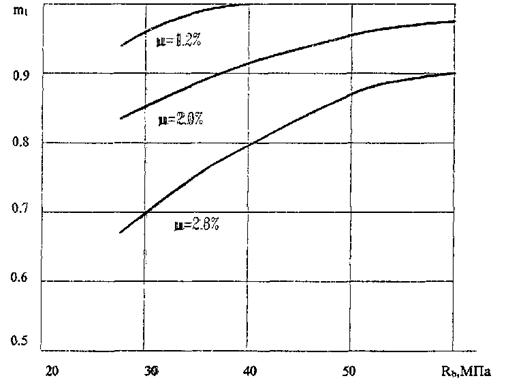
Рис. 1.1 Изменение коэффициента m1 в зависимости от нормативной прочности на сжатие бетона-матрицы и объемного содержания стекловолокна.
1.3.9. Значения коэффициента kor в формуле 1 принимаются:
kor = 0,37 при 10 мм £ δ £ 15 мм;
kor = 0,35 при 15 мм < δ £ 25 мм;
kor = 0,32 при 25 мм < δ £ 30 мм;
Значения kor для элементов толщиной менее 10 мм и более 30 мм могут быть уточнены в опытном порядке при соответствующем обосновании.
1.3.10. Значения коэффициента kl в формуле 1 принимаются:
kl = 0,95 - при длине фибры 60 мм;
kl = 0,9 - при длине фибры 40 мм;
kl = 0,85 - при длине фибры 20 мм;
kl = 0,70 - при длине фибры 10 мм.
1.3.11. При вычислении величины Rfbt в формулу вводится коэффициент γfb1, значения которого принимаются в зависимости от вида фибробетона и влажности среды, в которой эксплуатируется конструкция, по табл. 1.3.
Таблица 1.3
|
Значения коэффициента γfb1, при условиях эксплуатации конструкции |
|||
|
Воздушно-сухих |
Влажных W > 80 % |
На открытом воздухе |
|
|
Стеклофибробетон на портландцементе и щелочестойком волокне при проценте фибрового армирования |
|||
|
1,2 |
0,9 |
0,70 |
0,70 |
|
2,0 |
0,95 |
0,73 |
0,75 |
|
2,8 |
1,0 |
0,75 |
0,80 |
|
при μf ≥ 3 % |
1,0 |
0,80 |
0,90 |
1.3.12. Расчетное сопротивление сжатию стеклофибробетона Rfb определяется по формуле:
Rfb = γfb2×Rb, (3)
где: γfb2 - коэффициент условий работы, принимаемый равным:
γfb2 = 1 при μcr < μ < 1,5 %;
γfb2 = 1,1 при 1,5 % < μ < 2,5 %;
γfb2 = 0,95 при μ > 2,5 %.
1.3.13. Расчет по прочности сечений, нормальных к продольной оси стеклофибробетонного внецентренно нагруженного элемента, когда сила действует в плоскости оси симметрии, производится согласно основным положениям СНиП 2.03.01 и рекомендациям пп. 3.3-3.40 СНиП 2.03.03 по приведенным в нем формулам с учетом указаний п. 1.3.5-1.3.18 настоящих норм.
При этом расчет стеклофибробетонных элементов ведется:
- при фибровом армировании (см. п. 1.1.4) - как армоцементных элементов с арматурой, приведенной к равномерно распределенной по сечению элемента (см. п. 3.2 СНиП 2.03.03);
- при комбинированном армировании (см. п. 1.1.4) - как армоцементных элементов с комбинированным армированием (см. п. 3.2 СНиП 2.03.03).
Расчет стеклофибробетонных элементов производится по расчетным формулам для армоцемента согласно СНиП 2.03.03 с изменениями, приведенными в пп. 1.3.14-1.3.18 настоящих норм, с использованием приведенных в них расчетных схем, усилий и эпюр напряжений в сечениях стеклофибробетонного элемента.
1.3.14. Расчет прочности нормальных сечений изгибаемых, внецентренно сжатых, центрально и внецентренно растянутых стеклофибробетонных элементов производится по формулам 1-43 пп. 3.4-3.19 СНиП 2.03.03 с заменой в них величин, используемых для армоцемента, на величины для стеклофибробетона в соответствии с табл. 1.4.
Таблица 1.4
|
Расчетные величины, используемые для стеклофибробетона по настоящим нормам |
|
|
Rm×μm1 |
Rfbt |
|
Rc1 или Rb + Rmc×μ’m1 |
Rfb |
|
Rcf1 |
Rfb |
|
Rcw1 |
Rfbw |
|
Rcr1 |
Rfbr |
|
Rm×μmr1 |
Rfbtr |
Другие обозначения и величины в указанных формулах принимаются без изменений.
Величины Rfbt, Rfb, Rfbtf, (для полки), Rfbw (для ребра или стенки) и Rfb, Rfbtr (для кольцевого сечения) определяют по указаниям п. 1.3.7-1.3.12, принимая в формулах 4-6 значения коэффициентов ориентации соответственно для отдельных частей сечения элемента:
сжатой полки двутаврового сечения - k’orf;
растянутой полки двутаврового сечения - korf;
растянутой зоны сечения ребра или стенки - korw;
растянутой зоны кольцевого сечения - korr.
Равномерно распределенная по высоте сечения стальная стержневая или проволочная арматура может быть учтена в расчете путем ее приведения к фибровому армированию в соответствии с п. 3.2 СНиП 2.03.03 по формуле:
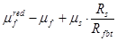
1.3.15. При расчете стеклофибробетонных конструкций по указаниям пп. 1.3.13-1.3.14 настоящих норм используются расчетные схемы внутренних усилий и напряжений, приведенные соответственно для элементов:
внецентренно сжатых - на рис. 1.8 и 1.9;
внецентренно растянутых - на рис. 1.10 и 1.11.
При этом условие п. 3.19 в СНиП 2.03.03 (формула 42) заменяется формулой:
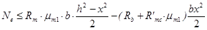
1.3.16. При расчете прочности стеклофибробетонных изгибаемых элементов прямоугольного сечения по схеме, приведенной на рис. 1.3, значение Rfbt умножается на коэффициент ω1, определяемый по формулам:
при h > 5bf ω1 = 0,5 + 2,5 Rfbt/Rfb; (5)
при h ≤ 5bf ω1 = 0,5 + 1,5 Rfbt/Rfb; (6)
1.3.17. При расчете прочности стеклофибробетонных изгибаемых элементов двутаврового сечения по схеме, приведенной на рис. 1.4 и 1.5 значение Rfbt в пределах стенки элемента умножается на коэффициент ω, определяемый по формуле п. 1.3.16. В пределах растянутой полки принимается полная величина Rfbt.
1.3.18. При расчете прочности стеклофибробетонных с комбинированным армированием изгибаемых элементов двутаврового сечения по схеме, приведенной на рис. 1.6 и 1.7 значение Rfbt для растянутой зоны сечения в пределах стенки принимается с коэффициентом ω1, принимаемый равным:
ω1 = 0,5 при μf = 1,2 %;
ω1 = 0,7 при μf = 2,0 %;
ω1 = 0,9 при μf = 2,8 %;
Для стеклофибробетона, расположенного в растянутой полке, значение Rfbt принимается с коэффициентом ω2, назначаемым при армировании растянутой полки стальной арматурой:
классов А-I, А-II, А-III, A-IV, Вр-I ω2 = 0,5 ω1;
классов A-V, A-VI, Вр-II, К7 и К19 ω2 = 0,2.
1.3.19. При расчете по прочности изгибаемых стеклофибробетонных элементов складчатого сечения с комбинированным армированием арматурой класса Вр-II значение величины Rs в расчетных формулах 7-22 пп. 3.7-3.12 СНиП 2.03.03 (см. рис. 1.4 и 1.5), принимается умноженным на коэффициент условий работы γfb3, принимаемый равным:
0,8 при условии Rfbt×At ≥ 0,5 Ns;
0,85 при условии 0,2 Ns < Rfbt×Abt < 0,5 Ns;
0,9 при условии Rfbt×Abt < 0,2 Ns,
где: Ns = As×Rs - суммарное предельное усилие в растянутой проволочной арматуре.
1.3.20. При расчете по прочности изгибаемых элементов стеклофибробетонных конструкций рекомендуется соблюдать условие: x ≤ ζR×h.
В случае, когда площадь сечения растянутой арматуры по конструктивным соображениям или из расчета по предельным состояниям второй группы принята большей, чем это требуется для соблюдения условия x ≤ ζR×h, то для элементов из бетона класса В30 и ниже при комбинированном армировании ненапрягаемой арматурой классов А-I, А-II, А-III, Вр-I допускается производить расчет по формулам (4), (7), (10), (11), (14) и (13) СНиП 2.03.03, принимая ζ = ζR×h.
Для элементов из бетона классов выше В30 и армируемых стержневой или проволочной арматурой, обычной или преднапряженной, более высоких классов, чем указанные в настоящем пункте, допускается производить уточненный расчет, пользуясь общими указаниями п. 3.17 (формулы 28, 31, 33, 34 и 35) СНиП 2.03.01, с учетом положений пп. 1.3.14-1.3.18 настоящих норм.
1.3.21. Расчет прочности сечений, нормальных к продольной оси изгибаемого трехслойного элемента с наружными слоями из стеклофибробетона без стальной арматуры производится из условия обеспеченного сцепления между слоями и их совместной работы до разрушения.
1.3.22. При расчете трехслойных элементов с наружными слоями из стеклофибробетона используется расчетная схема внутренних усилий и эпюра напряжений, приведенная на рис. 1.12 настоящих норм. Прочность нормального сечения изгибаемого трехслойного элемента определяется из условия:
M ≤ ω3×Rfbt×tf×bf×z, (7)
где: z - плечо внутренней пары сил (см. рис. 1.12), определяемое как расстояние между центрами тяжести эпюр напряжений в стеклофибробетоне сжатого и растянутого слоя;
ω3 - коэффициент полноты эпюры напряжений в растянутом стеклофибробетонном слое.
1.3.23. При расчете прочности нормальных сечений изгибаемых элементов по схеме, приведенной на рис. 1.12, для растянутого стеклофибробетонного слоя значение коэффициента ω3 принимаются по данным таблицы 1.5.
Таблица 1.5
|
1,5 |
2,0 |
2,5 |
3,0 |
5,0 |
|
|
коэффициент полноты эпюры растягивающих напряжений |
0,9 |
0,93 |
0,95 |
0,97 |
1,00 |
1.3.24. Высота сжатой зоны стеклофибробетона и значение плеча внутренней пары сил определяются из условий:
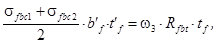
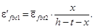
При этом напряжения сжатия определяют по относительным деформациям из условий упругой работы, используя следующие зависимости:
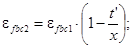
σfbc1 = Eb×εfbc1;
σfbc2 = Eb×εfbc2.
Значения 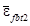
Рис. 1.2 Схема усилий и эпюра напряжений в сечении, нормальном к продольной оси изгибаемого стеклофибробетонного элемента прямоугольного сечения, при расчете его по прочности.
Рис. 1.3 Схема усилий и эпюра напряжений в сечении, нормальном к продольной оси изгибаемого стеклофибробетонного с комбинированным армированием элемента прямоугольного сечения при расчете его по прочности.
Рис. 1.4 Схема усилий и эпюра напряжений в сечении, нормальном к продольной оси загибаемого стеклофибробетонного элемента двутаврового сечения, при расчете его по прочности при х ≤ t’f.
Рис. 1.5 Схема усилий и эпюра напряжений в сечении, нормальном к продольной оси изгибаемого стеклофибробетонного элемента двутаврового сечения, при расчете его по прочности при х > t’f.
Рис. 1.6 Схема усилий и эпюра напряжений в сечении, нормальном к продольной оси изгибаемого стеклофибробетонного с комбинированным армированием элемента двутаврового сечения, при расчете его по прочности при х ≤ t’f.
Рис. 1.7 Схема усилий и эпюра напряжений в сечении, нормальном к продольной оси изгибаемого стеклофибробетонного с комбинированным армированием элемента двутаврового сечения, при расчете его по прочности при х > t’f.
Рис. 1.8 Схема усилий и эпюра напряжений в сечении, нормальном к продольной оси внецентренно сжатого стеклофибробетонного элемента двутаврового сечения, при расчете его по прочности при х ≤ t’f.
Рис. 1.9 Схема усилий и эпюра напряжений в сечении, нормальном к продольной оси внецентренно сжатого стеклофибробетонного элемента двутаврового сечения, при расчете его по прочности при x > t’f.
Рис. 1.10 Схема усилий и эпюра напряжений в сечении, нормальном к продольной оси внецентренно растянутого стеклофибробетонного элемента с комбинированным армированием, в расчете его по прочности при приложении продольной силы N в пределах ядра сечения.
1 - стержневая или проволочная арматура.
Рис. 1.11 Схема усилий и эпюра напряжений в сечении, нормальном к продольной оси внецентренно растянутого стеклофибробетонного элемента с комбинированным армированием, в расчете его по прочности при приложении продольной силы N за пределами ядра сечения.
1 - стержневая или проволочная арматура.
Рис. 1.12 Схема усилий и эпюра напряжений в сечении, нормальном к продольной оси изгибаемого трехслойного элемента с наружными слоями из стеклофибробетона.
1.3.25. В расчете прочности нормального сечения по формуле 7 значение z принимается в зависимости от высоты сжатой зоны:
при x >
t’ принимается 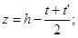
при x £ t’ принимается 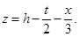
Таблица 1.6
|
Значения 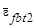 при величине процента фибрового армирования μfv |
|||||
|
1,5 |
2,0 |
2,5 |
3,0 |
5,0 |
|
|
25 |
30 |
35 |
45 |
50 |
65 |
|
35 |
25 |
30 |
40 |
50 |
60 |
|
40 |
25 |
30 |
40 |
45 |
55 |
Расчет по прочности сечений, наклонных к продольной оси элемента.
1.3.26. Расчет стеклофибробетонных элементов по наклонным сечениям выполняется на действие: поперечной силы по наклонной полосе между наклонными трещинами; поперечной силы по наклонной трещине; изгибающего момента по наклонной трещине в соответствии с указаниями пп. 3.21-3.23 СНиП 2.03.03 и пп. 1.3.27-1.3.29 настоящих норм.
1.3.27. Расчет стеклофибробетонных элементов прямоугольного сечения на действие поперечной силы для обеспечения прочности по наклонной полосе между наклонными трещинами выполняется с учетом указаний и по формулам (44) и (46) СНиП 2.03.03. При этом: значение φw1 определяется по формуле:
φw1 = 1 + 5 μfaw, (10)
где: μfaw = μv×k2nw (значение knw принимается по указаниям п. 1.3.15).
Значение правой части неравенства в формуле (44) СНиП 2.03.03 принимается не более 1,3.
1.3.28. Расчет стеклофибробетонных элементов по прочности на действие поперечной силы по наклонной трещине выполняется с учетом указаний и по формулам (47)-(51) СНиП 2.03.03. При этом в формулах (48), (49), (50) и (51) производится замена величин:
Qw1 - на Qfb; qmw - на qfb; Rmw×μmw1 на Rfbtw,
где: Rfbtw - определяется согласно указаниям пп. 1.3.7-1.3.12.
1.3.29. Расчет сечений, наклонных к продольной оси стеклофибробетонных элементов, на действие изгибающего момента выполняется в соответствии с положениями п. 3.23 и по формуле (52) СНиП 2.03.03. При этом в формуле (52) производится замена величин:
Rm×μmf1 - на Rfbtf; Rm×μmw1 - на Rfbtw,
где: Rfbtf и Rfbtw - величины, определяемые по указаниям пп. 1.3.7-1.3.9 и 1.3.15 настоящих норм.
Расчет на продавливание.
1.3.30. Расчет на продавливание плитных конструкций из стеклофибробетона без поперечной арматуры рекомендуется производить с учетом положений п. 3.42 СНиП 2.03.01 заменяя условие формулы (107) на условие формулы:
F ≤ 0,7×Rfbt×Um×h, (11)
где: Rfbt - принимается в соответствии с указаниями п. 1.3.7-1.3.9 и формулам (4) и (5) настоящих норм.
h - полная высота сечения элемента;
Um - среднеарифметическое значение параметров верхнего и нижнего оснований пирамиды, образующейся при продавливании в пределах рабочей высоты сечения (см. рис. 16 СНиП 2.03.01).
1.4. РАСЧЕТ СТЕКЛОФИБРОБЕТОННЫХ КОНСТРУКЦИЙ ПО ПРЕДЕЛЬНЫМ СОСТОЯНИЯМ ВТОРОЙ ГРУППЫ.
Расчет по образованию трещин.
1.4.1. Расчет по образованию трещин производится для стеклофибробетонных элементов и стеклофибробетонных элементов с комбинированным армированием стальной арматурой.
1.4.2. Расчет стеклофибробетонных элементов и стеклофибробетонных элементов с комбинированным армированием по образованию трещин, нормальных и наклонных к продольной оси элемента, производится в соответствии с основными положениями пп. 2.2-4.9, 4-11 СНиП 2.03.01 и указаниями пп. 4.1, 4.13 СНиП 2.03.03 для армоцементных элементов из мелкозернистого бетона соответствующего класса и по указаниям п. 1.4.3 настоящих норм из условия формулы (124) СНиП 2.03.01.
Mr ≤ Mcrc, (12)
1.4.3. Момент, воспринимаемый сечением, нормальным к продольной оси элемента при образовании трещин - Mcrc определяется из условий:
- для стеклофибробетонных элементов и элементов с комбинированным армированием без предварительного напряжения стальной арматуры
Mcrc = Wp1×σfbt,ser, (13)
- для элементов с комбинированным армированием и предварительно напрягаемой стальной арматурой
Mcrc = Wp1×σfbt,ser ± Mrp, (14)
Значение σfbt,ser определяется по формуле:
σfbt,ser = (1 - 10 μf)×Rfbt,ser, (15)
где: Rfbt,ser = Rfbt×γb3.
1.4.4. Значение Wp1 определяется по формуле
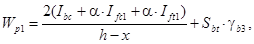
где: Ibc, Ifc1, Ift1 - момент инерции сжатой зоны стеклофибробетона, площадей сечения фибровой и стержневой или проволочной арматуры, расположенной соответственно в сжатой и растянутой зонах сечения, относительно нулевой линии;
Sbt - статический момент площади растянутой зоны стеклофибробетона относительно нулевой линии;
α - отношение модулей упругости фибровой арматуры Ef и бетона Eb.
Положение нулевой линии определяется по формуле:
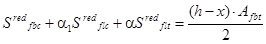
где: Sredfbc, Sredflc, Sredflt - статические моменты площадей сечений сжатой зоны стеклофибробетона, площадей сечения фибровой и стержневой или проволочной арматуры, расположенной в сжатой и растянутой зонах сечения относительно нулевой линии.
Значения Iflc, Iflt, Sredflc и Sredflt определяются с учетом коэффициентов армирования по площади фибрового μ’fa, μfa или суммарного приведенного фибрового и стержневого или проволочного армирования μ’s, μs. При этом приведенные коэффициенты армирования в общем случае определяются аналогично положениям п. 4.9 СНиП 2.03.03 по формулам:
для сжатой полки
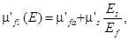
для стенки
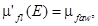
для растянутой полки
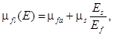
Коэффициенты μ’fa, μfa и μfaw определяются по формулам:
μ’fa = μ’fvf×k2orf’; (21)
μfa = μfvf×k2orf; (22)
μfaw = μfvw×k2orw; (23)
где: korf’, korf и korw - коэффициенты, учитывающие ориентацию фибры в полках и ребре, принимаются по указаниям пункта 1.3.9.
Значение коэффициента условий работы γb3, учитывающего влияние процента фибрового армирования, принимается в формуле (15) следующим:
при μf £ 1,5 % равным 1;
при μf = 2,0 % равным 1,05;
при μf = 3,0 % равным 1,10;
при μf = 5,0 % равным 1,20.
Значения γb3 для промежуточных величин μf принимаются по интерполяции.
1.4.5. Расчет по образованию трещин, наклонных к продольной оси элемента, производится по указаниям п. 4.11 СНиП 2.03.01 из формул (141), (142) и (143). Значение коэффициента α в формуле (142) принимается равным:
α = 0,02 при μf £ 1,5 %;
α = 0,015 при μf = 2,0 %;
α = 0,012 при μf = 3,0 %;
α = 0,010 при μf = 5,0 %.
При этом значение Rbt,ser заменяется на величину Rfbt, умноженную на коэффициент γb3 (см. п. 1.4.4).
Расчет по раскрытию трещин.
1.4.6. Расчет по раскрытию трещин производится только для стеклофибробетонных элементов с комбинированным армированием.
Расчет по раскрытию производится только для трещин, нормальных к продольной оси элемента.
1.4.7. Ширину раскрытия трещин, нормальных к продольной оси элемента при комбинированном армировании, следует определять по формуле:
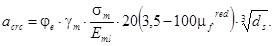
Значение σm определяется по формуле (57) СНиП 2.03.03 с заменой величины Wsl на Wfl для сечения, приведенного к условному эквивалентному сечению из стеклофибры, в соответствии со схемой на рис. 1.13.
Коэффициент φe, учитывающий влияние длительной нагрузки, принимается равным 3 для стеклофибробетона из мелкозернистого бетона групп А и Б. При кратковременном действии нагрузки значение коэффициента φe принимается равным 1.
Рис. 1.13 Схема приведения сечения стеклофибробетонного элемента к стеклянному, при расчете его по раскрытию трещин, нормальных к продольной оси элемента.
а) - сечение стеклофибробетонного элемента;
б) - сечение, приведенное к стеклянному
Коэффициент γm, учитывающий влияние объемного содержания стеклофибры, принимается равным:
γm = 5,0 при μf = 1,5 %;
γm = 4,0 при μf = 2,0 %;
γm = 2,6 при μf = 2,8 %;
γm = 2,0 при μf = 2,8 %;
γm = 1,5 при μf = 5,0 %;
При промежуточных значениях μf значения γm определяются по интерполяции.
1.4.8. Расчет по раскрытию трещин, наклонных к продольной оси элемента, не производится. Для предотвращения чрезмерного раскрытия трещин, наклонных к продольной оси элемента, при комбинированном армировании стеклофибробетонного элемента следует соблюдать условие:
σmt £ γb4×γb5×Rfbt,ser, (25)
где: значения σmt и γb4 принимаются по указаниям п. 4.11 СНиП 2.03.01.
Значения коэффициента условий работы γb5 принимаются в зависимости от процента фибрового армирования;
γb5 = 1,0 при μf £ 1,3 %;
γb5 = 1,05 при μf = 1,5 %;
γb5 = 1,10 при μf = 2,0 %;
γb5 = 1,20 при μf = 3,0 %;
Промежуточные значения μf вычисляются по интерполяции.
Расчет элементов стеклофибробетонных конструкций по деформациям.
1.4.9. Деформации (прогибы, углы поворота) элементов стеклофибробетонных конструкций вычисляются по формулам строительной механики, определяя значения кривизны согласно общим указаниям пп. 4.23-4.30 СНиП 2.03.01 и п.п. 1.4.10-1.4.13 настоящих норм.
Величина кривизны и деформаций фибробетонных элементов отсчитываются от их начального состояния. При наличии предварительного напряжения - от состояния до обжатия.
1.4.10. Кривизна стеклофибробетонных элементов и элементов с комбинированным армированием определяется:
а) для участков элемента, где в растянутой зоне не образуются трещины, нормальные к продольной оси элемента - как для сплошного тела;
б) для участков элемента с комбинированным армированием, где в растянутой зоне имеются трещины, нормальные к продольное оси - как отношение разности средних деформаций крайнего волокна сжатой зоны бетона и продольной растянутой арматуры к рабочей высоте сечения элемента.
Элементы или участки элементов рассматриваются без трещин в растянутой зоне, если трещины не образуются при действии постоянных, длительных и кратковременных нагрузок, при этом нагрузки вводятся в расчет с коэффициентом надежности по нагрузке γf = 1,0 согласно п. 1.20 СНиП 2.03.01.
Определение кривизны стеклофибробетонных элементов на участках без трещин в растянутой зоне.
1.4.11. Полное значение кривизны изгибаемых, внецентренно сжатых и внецентренно растянутых элементов на участках, где не образуются нормальные или наклонные к продольной оси элемента трещины, определяются по формуле:
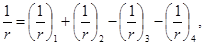
где: 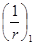 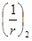
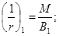
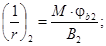
здесь: М - момент от соответствующей внешней нагрузки относительно оси, нормальной к плоскости действия момента и проходящей через центр тяжести приведенного сечения;
В1 - жесткость стеклофибробетонного элемента при кратковременном действии нагрузки, определяемая по формуле:
B1 = ηf×0,85×Eb×I1; (29)
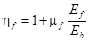
где: Eb - модуль упругости бетона, принимаемый по указаниям СНиП 2.03.01;
I1 - момент инерции сечения, приведенного к бетонному и включающего площадь бетона, фибровой
или фибровой и стержневой
арматуры, приведенной к бетону. При этом коэффициент приведения для фибровой арматуры 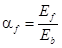 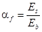
В2 - жесткость стеклофибробетонного элемента при учете продолжительного действия нагрузки, определяемая по формуле:
B2 = 0,85×B1; (31)
φb2 - коэффициент, учитывающий влияние длительной ползучести бетона и принимаемый равным
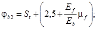
где: St - коэффициент, учитывающий возраст бетона и моменту (to) приложения длительной нагрузки и принимаемый
St = 1 при to = 28 суток;
St = 0,9 при to ³ 365 суток.
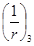
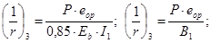
где: eop - эксцентриситет приложения силы Р относительно центра тяжести элемента.
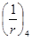
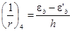
Здесь εb и ε’b - относительные деформации бетона, вызванные его усадкой и ползучестью под действием усилия предварительного обжатия, определяемые соответственно на уровне растянутой и сжатой грани сечения по формулам:
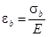
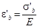
Значение σb принимается численно равным сумме потерь предварительного напряжения арматуры от усадки и ползучести бетона по указаниям пп. 6, 8 и 9 табл. 5 СНиП 2.03.01 для арматуры растянутой зоны (условно принимаемой расположенной на растянутой грани сечения), а σ’b - то же для напрягаемой арматуры, если бы она имелась на уровне крайнего сжатого волокна бетона.
При этом сумма 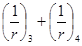 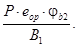
Определение кривизны на участках с трещинами в растянутой зоне.
1.4.12. Кривизна изгибаемых, внецентренно сжатых и внецентренно растянутых стеклофибробетонных с комбинированным армированием элементов прямоугольного, таврового и двутаврового сечений на участках, где образуются нормальные к продольное оси элемента трещины шириной раскрытия меньше 0,1 мм, определяется по рекомендациям и с использованием формул пп. 4.12-4.15 СНиП 2.03.03 с учетом дополнений приведенных в п. 1.4.10 настоящих норм. При ширине раскрытия трещин в сечении комбинированно армированного элемента более 0,10 мм прогибы и деформации рассчитываются как для железобетонного элемента (без учета стеклянной фибры).
1.4.13. Полное значение кривизны стеклофибробетонных элементов определяется в соответствии с п. 4.12 СНиП 2.03.03 со следующими изменениями:
- значения ρ в формуле (72) заменяется на 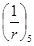 c соответствующими индексами: ;
c соответствующими индексами: ;
- определение величины ; 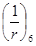 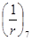
Значение Bf3 при кратковременном действии нагрузки принимается равным:
Bf3 = 0,9×Ef×If (37)
Значение Bf3 при длительном действии нагрузки принимается равным:
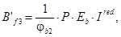
где: Р - коэффициент, учитывавший снижение жесткости элемента при длительном действии нагрузки и равный:
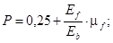
φb2 - коэффициент, принимаемый по формуле 32 настоящих норм;
Ired - момент инерции сечения, приведенного к бетонному.
Значение определяется по формуле 34 настоящих норм.
Определение прогибов.
1.4.14. Прогибы fm стеклофибробетонных элементов определяются в соответствии с положениями п. 4.31 СНиП 2.03.01, требованиями п. 4.16. СНиП 2.03.03, используя общие указания настоящих норм.
1.5. КОНСТРУКТИВНЫЕ ТРЕБОВАНИЯ.
1.5.1. При проектировании стеклофибробетонных конструкций и конструкций с комбинированным армированием с целью обеспечения их технологичности, требуемой надежности, долговечности и совместной работы арматуры и бетона следует выполнять конструктивные требования пп. 1.5.2-1.5.17 настоящих норм и основных положений раздела 5 СНиП 2.03.01 и раздела 5 СНиП 2.03.03.
Rfbt,ser ≥ 1,5 Rbt (40)
1.5.3. Размеры сечений элементов и конструкции следует назначать исходя из следующих условий:
а) толщину плоских плит или полок ребристых плит сборных конструкций принимать не менее 15 мм;
б) толщину элементов несъемной опалубки и слоев стеновых панелей принимать не менее 10 мм;
в) толщину элементов ограждений балконов, лоджий и архитектурной отделки фасадов принимать по условиям эксплуатации, но не менее 15 мм;
г) толщину монолитных оболочек и складок покрытий принимать не менее 20 мм.
Толщины стеклофибробетонных элементов, отличающиеся от указанных выше, могут приниматься при соответствующем технико-экономическом обосновании.
1.5.4. Коэффициент фибрового армирования по объему рекомендуется принимать в пределах 0,01 ≤ μfv ≤ 0,05 для конструкций, работающих на растяжение, изгиб и сжатие. Допускается при экономическом обосновании принимать μfv > 0,05 для конструкций, подверженных ударным, истирающим, температурным воздействиям или при предъявлении к конструкциям повышенных требований в части трещиностойкости.
1.5.5. Длина зоны анкеровки стержневой или проволочной арматуры при комбинированном армировании может приниматься по указаниям пп. 5.15 главы СНиП 2.03.01, как для случая наличия косвенной арматуры с учетом количества и ориентации фибровой арматуры.
1.5.6. Толщина слоя до стержневой или проволочной арматуры при условии обеспечения его равномерного фибрового армирования принимается согласно п. 5.4. СНиП 2.03.03.
1.5.7. При проектировании следует учитывать, что радиус свободного погиба (r) свежеотформованного листа изготавливаемых стеклофибробетонных конструкций рекомендуется принимать не менее 3t используемых фибр; при специальных устройствах листогибочного поддона или повторном вибрировании погиб допускается производить с кривизной вплоть до r = 0.
1.5.8. Толщину плит или стенок тонкостенных конструкций следует принимать не менее 1/200 их свободного пролета.
Для слоистых элементов, в которых утеплитель может содействовать повышению устойчивости плит, толщина плит может быть принята менее 1/200 их наибольшего размера или расстояния между ребрами. При этом принятая толщина должна быть соответствующим образом обоснована.
1.5.9. Стыки сборных стеклофибробетонных конструкций должны, как правило, замоноличиваться путем заполнения швов между элементами мелкозернистым бетоном. Если при изготовлении элементов обеспечивается плотная подгонка поверхностей друг к другу, допускается выполнение стыков насухо при передаче через стык только сжимающего усилия.
1.5.10. Рекомендуется применять следующие методы соединения элементов:
- с помощью стальных анкеров (рис. 1.14);
- с помощью закладных деталей (рис. 1.15);
- болтами и заклепками;
- склеиванием накладок из стеклоцемента.
1.5.11. Закладные детали, как правило, предусматриваются штампованными из стальных пластин, а также уголков или швеллеров с приваренными к ним в тавр или внахлестку анкерами в виде арматуры периодического профиля или гладкой арматуры (рис. 1.15а). Толщина пластин закладных деталей определяется в соответствии с требованиями сварки. Закладные детали могут быть непосредственно приварены к рабочей арматуре элементов (рис. 1.15б). Закладные детали соединяются между собой при помощи стыковых накладок из арматуры или полосовых накладок. Возможные виды закладных деталей показаны на рис. 1.16.
1.5.12. Соединения элементов на болтах, заклепках или склеиванием накладок из стеклоцемента можно осуществлять в опытном порядке при соответствующем обосновании.
1.5.13. Стыки сборных стеклофибробетонных и комбинированно армированных элементов могут устраиваться также по указаниям п. 5.34, 5.35 СНиП 2.03.03.
1.5.14. Для обеспечения сохранности стальной арматуры и ее совместной работы со стеклофибробетоном при проектировании следует соблюдать общие требования СНиП 2.03.01 и СНиП 2.03.03 по анкеровке ненапрягаемой и напрягаемой стальной арматуры и устройству закладных деталей.
1.5.15. Закладные детали в стеклофибробетонных конструкциях следует проектировать с учетом указаний п.п. 5.32, 5.33 СНиП 2.03.03.
1.5.16. Стыкование внахлестку стержневой и проволочной арматуры, которая используется с полным расчетным сопротивлением, в тонкостенных стеклофибробетонных элементах не допускается.
1.5.17. Для обеспечения анкеровки предварительно напрягаемой арматуры возможно использование указаний п. 5.38 СНиП 2.03.03.
Рис. 1.14. Соединение стеклофибробетонных элементов с помощью стальных анкеров.
Рис. 1.15. Анкеровка закладных деталей
а - анкерами из арматуры;
б - сваркой к рабочей стальной арматуре.
Рис. 1.16. Возможные конструктивные решения закладных деталей для стеклофибробетонных конструкций.
ПРИЛОЖЕНИЕ 1.1.
Основные буквенные обозначения. Терминология.
1.1.1. ОСНОВНЫЕ БУКВЕННЫЕ ОБОЗНАЧЕНИЯ.
Rb, Rbt - расчетные сопротивления бетона осевому сжатию и растяжению по СНиП 2.03.01-84;
Rfb, Rfbt - расчетные сопротивления стеклофибробетона соответственно при сжатии и растяжении;
Rs - расчетное сопротивление растяжению стальной стержневой или проволочной арматуры;
Rsc, Rpc - расчетное сопротивление стальной обычной и преднапряженной арматуры при сжатии;
Rf - расчетное сопротивление растяжению фибровой стеклянной арматуры;
Еb - начальный модуль упругости бетона при сжатии и растяжении;
Еs - модуль упругости стержневой пли проволочной арматуры;
Еf - модуль упругости стеклянной фибровой арматуры;
μfm - коэффициент фибрового армирования по массе;
μfv - коэффициент фибрового армирования по объему;
μfa - коэффициент фибрового армирования по площади сечения;
df - диаметр фибр (элементарного волокна);
d - диаметр стержневой или проволочной арматуры;
lf - длина фибр;
Ro - коэффициент учитывающий ориентацию фибр относительно направления главных растягивающих напряжений;
φf - коэффициент эффективности косвенного армирования фибровой арматурой;
η - характеристика сцепления фибр с бетоном;
If,red - момент инерции стеклофибробетонного сечения, приведенного к бетону, относительно его центра тяжести;
Wf,red - момент сопротивления стеклофибробетонного сечения, приведенного к бетону.
1.1.2. ТЕРМИНОЛОГИЯ.
Стеклофибробетон - бетон, армированный фибрами из стекловолокна, произвольно или ориентированно распределенными в его объеме или части объема.
Стеклянная фибра - короткие отрезки стекловолокна, получаемые путем резки ровинга или комплексной нити.
Процент фибрового армирования по объему - относительное содержание объема фибр в единице объема стеклофибробетона, в процентах.
Процент фибрового армирования по массе - отношение в процентах массы фибр, содержащихся в единице объема фибробетона, к массе этой единицы объема.
Коэффициент фибрового армирования по объему - относительное содержание объема фибр в единице объема стеклофибробетона.
Комбинированные стеклофибробетонные конструкции - конструкции из фибробетона, имеющие также обычную или преднапряженную стержневую или проволочную арматуру.
Самонапряженные стеклофибробетонные конструкции - конструкции из стеклофибробетона (в том числе комбинированные), матрица которого выполняется на напрягающем цементе.
Элементарная нить - моноволокно (одиночное) диаметром 10-15 мкм по терминологии ГОСТ 17139 "Ровинг из стеклянных нитей. Технические условия".
Комплексная нить - нить, собранная из определенного количества (200-400 шт.) элементарных нитей, склеенных замасливателем в техническом процессе.
Ровинг - жгут, состоящий из нескольких комплексных нитей, изготавливаемый по ТУ 21-38-233 "Ровинг рассыпающийся из цементностойкого стекловолокна. Технические условия".
ПРИЛОЖЕНИЕ 1.2.
Рекомендуемые архитектурно-конструктивные формы, типы конструктивных элементов и номенклатура стеклофибробетонных конструкций и изделий.
1.2.1. АРХИТЕКТУРНО-КОНСТРУКТИВНЫЕ ФОРМЫ И ТИПЫ КОНСТРУКТИВНЫХ ЭЛЕМЕНТОВ.
1. Архитектурно-конструктивные формы и типы конструктивных элементов, определяемые их геометрической формой и размерами, при выполнении их из стеклофибробетона принимаются для:
- зданий общественного назначения;
- жилых зданий;
- подземных сооружений;
- элементов благоустройства и малых архитектурных форм.
2. Архитектурно-конструктивные формы, рекомендуемые для зданий общественного назначения, приведены в табл. 1.
В таблице приведены схемы конструктивных форм здании и сооружений пролетами до 15 м. Конструктивные схемы 1 и 2 следует рассматривать как схемы плоскостных конструкций; схемы 3-11 являются схемами зданий, покрытия которых работают и рассчитываются как пространственные конструкции.
3. Приведенные в табл. 1 и другие архитектурно-конструктивные формы рекомендуется образовывать взаимным пересечением плоских или криволинейных граней, каждая из которых является плитой или пологой цилиндрической оболочкой. При специальном обосновании могут быть использованы покрытия в виде пологих гиперболических параболоидов или оболочек положительной гауссовой кривизны.
4. С целью получения более разнообразных архитектурных форм и соответственно решений интерьеров зальных помещений может быть использован эффективный прием размещения отдельных фрагментов покрытий в разных уровнях.
5. Конструктивные схемы 1 и 2 рекомендуется применять в тех случаях, когда на отводимых для строительства участках экономически целесообразно размещение зданий с криволинейным произвольным планом, наиболее отвечающих градостроительным требованиям.
6. Конструктивные схемы 3, 4 и 11, скомпонованные по типу складчатых куполов или воронкообразных форм рекомендуется применять как примеры центрических решений, целесообразных при комплексной застройке жилых микрорайонов с целью разнообразия их архитектуры.
7. Схемы 5-6 рекомендуется использовать в тех случаях, когда пространственную конструктивную форму целесообразно опирать непосредственно на фундаменты; в этих случаях она совмещает в себе функции покрытия и стен.
8. Сотовую конструкцию (схема 7) рекомендуется компоновать произвольными сочетаниями отдельных объемных элементов-ячеек, каждая из которых позволяет решать автономную функциональную задачу.
9. Конструктивные решения по схемам 8 - "Шатер" и 9 - "Геликоид" рекомендуется использовать как для малоэтажного жилищного строительства, так и для общественных зданий.
10. Применение схемы 10 позволяет с помощью известных конструкций "встречных" складок компоновать сооружения с прямоугольным вытянутым планом, который может наращиваться постепенно по мере осуществления последующих очередей строительства.
11. Приведенные в таблице 1 конструктивные схемы за исключением схемы 7 рекомендуется компоновать с помощью сочетания граней разной геометрической формы. Каждая из граней может быть принята в виде сборных элементов, изготавливаемых в опалубочных формах, как правило имеющихся на предприятиях промышленности строительных материалов Москвы или Московской области.
12. Конструктивная схема 7 - "Сотовые конструкции" - может быть осуществлена также из монолитного стеклофибробетона путем набрызга по ранее установленному легкому стальному каркасу, а также в сборно-монолитном варианте.
13. Для применения в гражданском строительстве рекомендуются типы строительных элементов, приведенные в табл. 2.
Для жилищного строительства рекомендуются сборные элементы из стеклофибробетона в виде пластин с плоской или рельефной поверхностью, стеновые панели трехслойные, ограждения лоджий, козырьки входов, сантехнические поддоны ребристой конструкции (позиции 1-3), кровельная черепица (позиция 11).
14. Для строительства общественных зданий и сооружений рекомендуются следующие типы тонкостенных элементов из стеклофибробетона: ребристые плиты длиной 6 м для оболочек, складок, куполов пролетами до 42 м. Плиты принимаются с различной формой плана - прямоугольного, трапецевидного и в виде равностороннего треугольника (позиции 5-7).
15. Для оболочек и складок малого пролета (до 12 м) могут быть применены безреберные элементы в виде складок с ромбическим планом (позиции 8, 9), складчатые элементы с треугольным планом (позиция 10).
16. Для применения в подземном городском строительстве рекомендуются конструктивные типы элементов из стеклофибробетона, приведенные в табл. 3.
Рекомендуются к применению стеклофибробетонные пространственные элементы колец горловин колодцев, опорные кольца люков колодцев, лотковые перекрытия, лотковые днища, плиты перекрытий каналов теплосетей, лотки отстойников, блоки береговых укреплений, трубы безнапорные.
17. Рекомендуемые типы стеклофибробетонных элементов для городского благоустройства, малых архитектурных форм и др. приведены в табл. 4.
Из стеклофибробетона рекомендуется проектировать плоские плиты для облицовки стен, изделия покрытия дорог, тротуаров, бортовые камни, панели заборов, теневые навесы, цветочницы, урны, скамейки, рекламные щиты, дорожные указатели.
Эффективным является применение стеклофибробетонных элементов несъемной опалубки (позиция 4, табл. 3).
1.2.2. НОМЕНКЛАТУРА ПРЕДСТАВИТЕЛЕЙ КОНСТРУКЦИЙ И ИЗДЕЛИЙ ИЗ СТЕКЛОФИБРОБЕТОНА.
1. В табл. 5 приведена номенклатура представителей конструкций и изделий из стеклофибробетона. В таблице приведены эскизы элементов, характерные геометрические параметры и указаны предприятия-изготовители.
Рекомендуется при проектировании стеклофибробетонных конструкций учитывать приведенный перечень для выбора типа изделий, их номинальных размеров и выбора предприятия-изготовителя.
2. В табл. 5 в соответствии с позициями 1-15 раздела 1.2.1 данного приложения приведены:
- элементы тонкостенных пространственных покрытий общественных зданий (Изготовители - ТОО "Модуль", АООТ "Прокон");
- сборные элементы коттеджей (Изготовитель - фирма "Фибробетон", т. 215-27-60);
- сборные элементы для малоэтажного жилищного строительства (Изготовитель - фирма "Фибробетон");
- облицовочные панели фасадов и окон реконструируемых жилых зданий (Изготовители - АО "Стилком", ЗЖБИ № 16, фирма "Фибробетон");
- элементы подземных сооружений (Изготовители - АООТ "Мосинжжелезобетон", ЗЖБИ № 15, фирма "Фибробетон");
- элементы городского благоустройства (Изготовители - АООТ "Мосинжжелезобетон", ЗЖБИ № 17, ЗЖБИ № 15, фирма "Фибробетон").
3. Следует учитывать, что в табл. 5 приведена номенклатура представителей конструкций и изделий из стеклофибробетона для использования при проектировании в стадии технического проекта. При разработке рабочей документации следует пользоваться полной номенклатурой, включающей в себя вес марки освоенных изделий, (МНИИТЭП, НИИЖБ, фирма "Фибробетон").
Таблица 1. Архитектурно-конструктивные формы общественных зданий.
|
Тип формы |
Схема |
Назначение |
|
|
1 |
2 |
3 |
4 |
|
"Улитка"-1 |
Здания торгового назначения, кафе, павильоны Ширина здания - 6 м |
||
|
"Улитка"-2 |
Здания торгового назначения, кафе, павильоны Ширина здания - 6 м |
||
|
Складчатый купол |
Магазины, муниципальные рынки, кафе Пролет 12-15 м |
||
|
Воронкообразное покрытие |
Магазины, муниципальные рынки, кафе Пролет 12-15 м |
||
|
Многогранник-1 |
Магазины, муниципальные рынки, кафе Пролет 12-15 м |
||
|
Многогранник-2 |
Магазины, муниципальные рынки, кафе Пролет 12-15 м |
||
|
Сотовая конструкция |
Пансионаты, кемпинги, торговые центры, муниципальные рынки Пролет ячейки-модуля 3-6 м |
||
|
Шатер |
Коттеджи, магазины, муниципальные рынки, рестораны Ширина здания - 6 м |
||
|
Оболочка типа "Геликоид" |
Коттеджи, магазины, рынки Ширина здания - 12 м |
||
|
Встречные складки |
Навесы автовокзалов, муниципальные рынки, торговые ряды Ширина здания - 6 м |
||
|
Складчатый купол с навесом |
Муниципальные рынки, торговые центры Пролет 25 м |
Таблица 2. Типы элементов жилых и общественных зданий
|
Наименование элемента |
Эскиз элемента |
Примечания |
|
|
1 |
2 |
3 |
4 |
|
Стеновая панель трехслойная |
|||
|
Ограждение лоджий |
|||
|
Козырек входов |
|||
|
Поддон сантехкабины |
|||
|
Плита пространственного покрытия |
Для оболочек размерами в плане от 18´18 до 42´42 м |
||
|
Плита пространственного покрытия |
|
Для оболочек и куполов с центрическим планом и складок с пролетами от 12 м до 24 м |
|
|
Плита пространственного покрытия |
Для оболочек составного типа пролетом до 36 м |
||
|
Элементы складок |
Для складок пролетом до 6 м |
||
|
Криволинейный ромбический элемент |
Для оболочек пролетом до 18 м |
||
|
Складчатый элемент |
Для складок пролетом до 12 м |
||
|
Черепица |
Таблица 3. Типы элементов подземных сооружений
|
Наименование элемента |
Эскиз элемента |
Примечания |
|
|
1 |
2 |
3 |
4 |
|
Кольца горловин колодцев |
Возможна замена стеклянной фибры фибрами из волокон другого типа |
||
|
2 |
Опорные кольца люков колодцев |
||
|
3 |
Лотковые перекрытия типа ЛП |
||
|
4 |
Лотковые днища типа ЛД |
||
|
5 |
Плиты перекрытий каналов теплосетей |
||
|
6 |
Трубы безнапорные |
||
|
Лоток отстойника |
|||
|
Блок берегоукрепляющий |
Таблица 4. Типы сборных элементов для благоустройства, малых форм и т.п.
|
№ п/п |
Наименование элемента |
Эскиз элемента |
Примечания |
|
1 |
2 |
3 |
4 |
|
Плиты для облицовки |
|||
|
Изделия для покрытия дорог, тротуаров |
|||
|
3 |
Бортовые камни |
||
|
Несъемная опалубка |
|||
|
5 |
Панели заборов |
||
|
6 |
Элементы покрытия теневых навесов |
Шатры, оболочку складки, пологие купола |
|
|
7 |
Цветочницы, урны |
||
|
8 |
Скамейки |
||
|
Щиты рекламы, дорожные указатели |
Таблица 5. Номенклатура представителей конструкций и изделий из стеклофибробетона
|
Наименование изделия |
Эскиз |
Размеры, мм |
Организация-изготовитель |
|||
|
Д |
В |
Ш1/Ш2 |
||||
|
1 |
2 |
3 |
4 |
5 |
6 |
7 |
|
Плита пространственного покрытия с треугольной формой плана |
3100 |
3100 |
120/20 |
ТОО "Модуль" АООТ "Прокон" |
||
|
Плита пространственного покрытия с прямоугольной формой плана |
6090 |
2990 |
300/25 |
ТОО "Модуль" АООТ "Прокон" |
||
|
3 |
Панель кровли коттеджа с рельефом "под классическую черепицу" |
4200 |
1560 |
130/30 |
фирма "Фибробетон" |
|
|
Элемент кровли коттеджа |
2060 |
650 |
110/30 |
фирма "Фибробетон" |
||
|
5 |
Экран входа коттеджа |
2130 |
870 |
60/30 |
фирма "Фибробетон" |
|
|
6 |
Сантехнический поддон жилого дома |
1630 |
1620 |
90/40 |
фирма "Фибробетон" |
|
|
7 |
Декоративное ограждение лоджий жилого дома |
1860 |
1300 |
40 |
фирма "Фибробетон" |
|
|
8 |
Козырек входа жилого дома |
1325 |
600 |
60 |
фирма "Фибробетон" |
|
|
9 |
Панель забора |
2800 |
800 |
50/20 |
фирма "Фибробетон" |
|
|
10 |
Облицовочная панель фасада |
1485 |
645 |
15 |
АО "Стилком" ЗЖБИ № 16 |
|
|
11 |
Облицовочный элемент окна |
1500 |
70 |
60 |
АО "Стилком" ЗЖБИ № 16 |
|
|
12 |
Труба безнапорная |
5150 |
426 |
50 |
АООТ "Мосинжжелезобетон" ЗЖБИ №15 |
|
|
13 |
Кольцо колодца |
990 |
700 |
70 |
АООТ "Мосинжжелезобетон" ЗЖБИ № 15 |
|
|
14 |
Опорный камень |
770 |
770 |
220 |
АООТ "Мосинжжелезобетон" ЗЖБИ № 15 |
|
|
Камень бордюра |
1485 |
645 |
300/260 |
АООТ "Мосинжжелезобетон" ЗЖБИ № 15 |
||
|
16 |
Лотковое перекрытие |
2980 |
540 |
1080 |
АООТ "Мосинжжелезобетон" ЗЖБИ № 15 |
|
|
17 |
Лотковое днище |
2980 |
180 |
1090 |
АООТ "Мосинжжелезобетон" ЗЖБИ № 15 |
|
|
18 |
Ограда |
2890 |
1050/1700 |
190 |
АООТ "Мосинжжелезобетон" ЗЖБИ № 15 |
|
|
19 |
Плита перекрытия каналов |
2520 |
1200 |
200 |
АООТ "Мосинжжелезобетон" ЗЖБИ № 15 |
|
|
Плита покрытия трамвайных путей |
570 |
460 |
100 |
АООТ "Мосинжжелезобетон" ЗЖБИ № 15 |
||
|
21 |
Элемент дорожный декоративный |
400 |
400 |
80 |
АООТ "Мосинжжелезобетон" ЗЖБИ № 15 |
|
ЧАСТЬ 2. ОСНОВНЫЕ ПОЛОЖЕНИЯ ТЕХНОЛОГИЙ ПРОИЗВОДСТВА ФИБРОБЕТОННЫХ ИЗДЕЛИЙ И КОНСТРУКЦИЙ.
2.1. ОБЩИЕ ПОЛОЖЕНИЯ.
2.1.1. Настоящие нормы распространяются на технологии и методы изготовления фибробетонных конструкций на основе тяжелого (обычного), мелкозернистого (песчаного) бетонов и следующих видов фибры:
- стальной;
- из щелочестойкого стекловолокна;
- из обычного (алюмоборосиликатного) стекловолокна;
- из синтетических волокон.
2.1.2. Указаниями норм следует пользоваться при разработке и использовании технологий производства конструкций, изделий, отдельных элементов и деталей (далее по тексту - конструкции) с фибровым или комбинированным армированием.
Фибробетонные конструкции в зависимости от их армирования подразделяются на конструкции:
- с фибровым армированием - при их армировании только фибрами какого-либо вида, равномерно распределенными по объему (зоне) элемента;
- с комбинированным армированием - при их армировании фибрами, равномерно распределенными по объему (зоне) элемента, в сочетании со стержневой или проволочной арматурой (как в обычном железобетоне в соответствии со СНиП 2.03.01-84 "Бетонные и железобетонные конструкции. Нормы проектирования" [37] и ГОСТ 27006 "Бетоны тяжелые и мелкозернистые. Технические условия" [1]).
Фибровая, стержневая или проволочная арматура должна отвечать требованиям соответствующих ГОСТов и Технических условий, приведенных в приложении 2.1 настоящих норм.
2.1.3. К применению должны быть рекомендованы в первую очередь те технологические схемы, методы и оборудование для производства фибробетонных конструкций, при которых реализуется задача максимального использования прочностных свойств фибры и бетона-матрицы с целью достижения наибольшей прочности, плотности и долговечности материала и конструкций при наименьших трудозатратах и материалоемкости. В производстве фибробетонных конструкций предпочтение следует отдавать тем видам материалов и оборудования, которые позволяют повысить степень механизации и автоматизации технологии в заводских или построечных условиях.
2.1.4. При определении рациональных вариантов технологии и организации опытного (опытно-промышленного) производства фибробетонных конструкций следует руководствоваться указаниями раздела 2.3. настоящего документа с целью принятия оптимального решения исходя из конкретных условий производства, возможностей использования недефицитных, эффективных и дешевых исходных материалов и компонентов, а также применения апробированного отечественного или импортного оборудования.
2.1.5. Настоящими нормами производства фибробетонных конструкций предусматриваются следующие виды технологий, определяемые по названию основного технологического приема:
- набрызг ("спрей");
- предварительное перемешивание ("премиксинг") с последующим формованием смеси, осуществляемым виброуплотнением, радиальным роликовым формованием, роликовым прессованием, экструзией или иными апробированными методами.
2.1.6. При производстве фибробетонных конструкций должны соблюдаться требования СНиП III-4-93 "Техника безопасности в строительстве", а также требования, изложенные в разделе 2.6 настоящего документа.
2.2. ОБЛАСТИ ПРИМЕНЕНИЯ И ТЕХНОЛОГИИ ПРОИЗВОДСТВА ФИБРОБЕТОННЫХ КОНСТРУКЦИЙ И ИЗДЕЛИЙ.
2.2.1. ВИДЫ ФИБРОБЕТОНОВ И ТЕХНИЧЕСКИЕ ТРЕБОВАНИЯ К НИМ.
Указания настоящих норм распространяются на разработку и применение технологий производства конструкций из следующих видов фибробетона:
- стеклофибробетона;
- сталефибробетона;
- фибробетона на синтетической фибре.
Стеклофибробетон изготавливается из мелкозернистого бетона (бетон-матрица) и армирующих его отрезков стеклоровинга (фибр), равномерно распределенных по объему бетона изделия или отдельных его частей (зон). Совместность работы бетона и фибр обеспечивается за счет сцепления по их поверхности.
Сталефибробетон изготавливается из мелкозернистого бетона (или с добавлением крупного заполнителя) и армирующих его стальных фибр различного вида, равномерно распределенных по объему. Совместность работы бетона и стальных фибр обеспечивается за счет сцепления по их поверхности или путем устройства анкеров в виде утолщений или загибов на концах фибр.
Фибробетон на синтетической фибре изготавливается из: мелкозернистого бетона и армирующих его отрезков синтетических волокон (фибр), например, из полипропилена, равномерно распределенных по объему бетона изделия или отдельных его частей (зон). Совместность работы бетона и фибр обеспечивается за счет сцепления по их поверхности.
Разрабатываемые технологии и технологические приемы изготовления фибробетонных конструкций должны обеспечивать получение фибробетонов требуемых свойств, предусмотренных частью 1 настоящих норм (для стеклофибробетона), "Рекомендациями по проектированию и изготовлению сталефибробетонных конструкций" [48], а также проектно-технической документацией на конкретные виды конструкций. По показателям прочности при сжатии, морозостойкости и водонепроницаемости классы фибробетонов принимаются как для бетонов в соответствии с ГОСТ 25192, ГОСТ 26633, СНиП 2.03.01 и СТ СЭВ 3978.
Основные буквенные обозначения и используемая терминология приведены в 1 части настоящих ВСН.
2.2.2. МАТЕРИАЛЫ И ТРЕБОВАНИЯ К НИМ.
2.2.2.1. Мелкозернистый бетон, используемый для изготовления фибробетонов в соответствии с настоящими ВСН, должен отвечать требованиям ГОСТ 26633 и настоящих норм (часть 1, позиции 1.1, 1.1.14, 1.2.1, 1.2.2).
В случае использования для изготовления сталефибробетона крупного заполнителя, бетон-матрица должен отвечать требованиям ГОСТ 26633 и пп. 2.1-2.6 рекомендаций [48].
Кроме того, бетон-матрица должен отвечать специальным требованиям проектной документации на конструкцию в части максимальных или минимальных размеров крупного и мелкого заполнителя, а также вида применяемого вяжущего и химических добавок.
2.2.2.2. В качестве вяжущего для фибробетонов применяются различные виды цементов. Назначение конкретного вида цемента связано с видом используемой фибры, достижением наиболее рационального ее использования в фибробетоне и обеспечением максимальной прочности и долговечности фибробетонных конструкций.
Вяжущее для стеклофибробетона выбирается в соответствии с требованиями 1 части настоящих норм, цемент для сталефибробетона - согласно указаниям [48] (п.п. 6.1-6.5). Для фибробетонов на синтетической фибре вяжущие выбираются опытным путем и обосновываются в соответствующем порядке.
Цементы для фибробетонов должны отвечать требованиям соответствующих ГОСТов (Приложение 2.1).
2.2.2.3. Использование химических добавок в составе фибробетонных смесей рекомендуется для достижения определенных значений подвижности и удобоукладываемости смеси исходя из требований конкретного вида технологии. Выбор и применение химических добавок в бетон выполняется в соответствии с ГОСТ 24211 [17], а также указаниями п. 1.2.3 части 1 настоящих норм (для стеклофибробетона) и п.п. 6.15-6.17 Рекомендаций [48] (для сталефибробетона). Химические добавки должны отвечать требованиям соответствующих стандартов и технических условий (Приложение 2.1).
2.2.2.4. Заполнители для фибробетона (крупный, мелкий) принимаются с учетом вида и агрегатного состояния фибры, назначения и размеров конструкции, класса и марки бетона, типа используемой технологии и должны отвечать требованиям соответствующих ГОСТов [4, 5], а также настоящих норм (ч. 1, позиции 1.2.1, 1.2.2 - для стеклофибробетона и [48] - для сталефибробетона - п.п. 6.6, 6.7, 6.8.).
2.2.2.5. Стальная фибра должна приниматься к использованию в производстве в соответствии с указаниями [48] (п.п. 2.9-2.13) и отвечать требованиям соответствующих технических условий и стандартов.
Допускается применение других видов стальной фибры, не указанных в [48] (например, приведенных в п.п. 51, 52 Приложения 2.1 настоящих норм), при соответствующем обосновании и согласовании в установленном порядке с головной организацией (НИИЖБ).
2.2.2.6. Стеклянная фибра должна отвечать требованиям части 1 настоящих ВСН (п.п. 1.1.15, 1.1.16, 1.2.10-1.2.12) и соответствующих ТУ (Приложение 2.1 п.п. 46, 47).
2.2.2.7. Синтетическая фибра, имеющая ограниченный опыт применения, должна отвечать требованиям соответствующих технических условий и стандартов, которые приводятся в проектной документации на конструкцию или (и) в Технологических регламентах на их изготовление.
2.2.2.8. Стержневая и проволочная арматура, используемая при комбинированном армировании, назначается с учетом типа конструкций, наличия предварительного напряжения, условий возведения и эксплуатации конструкций. Стержневая, проволочная арматура и сталь для закладных деталей принимаются по соответствующим указаниям СНиП 2.03.01, а также согласно требованиям 1 части настоящих ВСН (для стеклофибробетона) и документа [48] (для сталефибробетона).
2.2.3. ТЕХНОЛОГИЧЕСКОЕ ОБОРУДОВАНИЕ.
2.2.3.1. Для производства фибробетонных конструкций может быть использовано как специальное отечественное или импортное технологическое оборудование, так и серийно выпускаемое отечественное оборудование, гарантирующее получение фибробетонных смесей с требуемыми свойствами и фибробетона с заданными проектными характеристиками.
При выборе технологического оборудования в соответствии с конкретными видами фибробетона и особенностями используемой технологии следует руководствоваться нижеследующими положениями.
2.2.3.2. В производстве стеклофибробетонных конструкций в зависимости от условий производства и вида используемой технологии может быть применено следующее технологическое оборудование.
А. В технологии "набрызга", реализуемой в заводских или построечных условиях (например, нанесение смеси на пневмоопалубку или набрызг гидроизоляционного покрытия), используется следующее смесительное, нагнетательное и напыляющее технологическое оборудование:
а) пневмоустановки или растворонасосы для подачи мелкозернистой смеси:
- растворонасосы СО-150, СО-152 (или аналоги);
- нагнетательные установки фирмы "Пауэр-Спрайз", например, типа PS 9000 А для ручного пневмонанесения, полуавтоматические и автоматические установки (например, траверсная пневмонапыляющая установка, работающая в автоматическом режиме); мобильная смесительно-нагнетательная установка PS 4000 М;
б) пистолеты-напылители стеклофибробетонной смеси совмещенные с рубящим устройством:
- марки РНП-40 (отечественного производства);
- конструкции ЦНИИОМТП (отечественного производства);
- концентрический пистолет-напылитель в комплекте с установкой PS 9000 А;
- конструкции НИИЖБ1;
1 Конструкция находится в стадии доработки.
- конструкции фирмы "НСТ";
в) смесители для приготовления мелкозернистой бетонной смеси:
- лопастные, например СБ-46;
- широкозахватные высокоскоростные импортные смесители, например, марок GRC-80, GRC-100 и др.
Б. В технологии, реализуемой "методом предварительного перемешивания", используется:
- серийное смесительное оборудование отечественного производства;
- спирально-вихревые смесители марок ССВ-0,01 и ССВ-0,3;
- прутково-шнековые смесители марок СПШ;
- импортные смесители предварительного перемешивания, например, марки "Экономи-2", "серии 100" в виде базового модуля.
Для нарезки и дозирования фибры используются специальные рубящие устройства, например, высокопроизводительное устройство многонитевой рубки стекловолокна фирмы "Пауэр Спрайз" или закрепляемые агрегаты в виде пистолетов. Конструкции таких устройств указаны в п. 2.2.3.2. (б).
Для виброуплотнения фибробетонных смесей, в том числе с пригрузом, вакуумированием, может быть использовано серийное технологическое оборудование, применяемое для изготовления обычных железобетонных конструкций.
2.2.3.3. Для производства сталефибробетонных конструкций в зависимости от вида и назначения изделий рекомендуются следующие виды технологий и технологического оборудования.
а) Для изготовления из сталефибробетона стеновых колец смотровых колодцев целесообразно использовать технологию роликового формования с применением отечественного серийного технологического оборудования, модернизируемого в опытном порядке (см. подраздел 2.3.5) с целью уменьшения толщины стеновых колец. (Приложение 2.3, п.п. 1-3).
б) Производство плоских и линейных изделий из сталефибробетона может выполняться по технологии роликового формования готовой сталефибробетонной смеси с использованием соответствующего оборудования (Приложение 2.3, п. 9; Приложение 2.1, п. 48).
в) Для устройства конструкций полов, покрытий терминалов, дебаркадеров и т.п. могут применяться литые сталефибробетонные смеси, укладываемые по освоенной в отечественной практике технологии.
2.2.3.4. Рабочие характеристики технологического оборудования, применяемого для производства фибробетонных конструкций приведены в разделе 2.3, а также в соответствующих технологических регламентах.
2.2.4. ОПЫТ ПРОИЗВОДСТВА И ЭФФЕКТИВНОСТЬ ПРИМЕНЕНИЯ ФИБРОБЕТОННЫХ КОНСТРУКЦИЙ.
2.2.4.1. На стадии разработки опытного (опытно-промышленного) производства фибробетонных конструкций с целью получения оптимальных результатов следует учитывать накопленный отечественный и зарубежный опыт производства и применения фибробетонных строительных конструкций различного назначения.
2.2.4.2. Опыт разработки, производства и применения в строительстве фибробетонных конструкций различных видов описан в соответствующей технической литературе (см. справочное приложение 2.4). Указанные документы содержат в том числе конкретные данные по конструкциям, составам фибробетонов и технологическому оборудованию.
2.2.4.3. Эффективные области применения фибрового армирования конструкций, основанные на опыте использования различных видов фибробетонов, представлены в виде схемы на рис. 2.1.
Рис. 2.1 Области эффективного использования различных видов волокон для фибрового армирования конструкций.
2.2.4.4. Диапазоны расхода материалов - составляющих фибробетонных смесей - приведены в табл. 2.1.
Конкретные составы фибробетонов назначаются с учетом свойств конструкций и технологии их производства на основе положений раздела 2.4 настоящих ВСН.
2.2.4.5. Справочные значения физико-механических характеристик стеклофибробетона приведены в табл. 2.2.
2.2.4.6. Фибробетонные конструкции рекомендуются к применению в тех случаях, когда наиболее эффективно могут быть использованы следующие их технические преимущества по сравнению с обычным железобетоном:
- повышенные показатели трещиностойкости, ударной прочности и вязкости, износостойкости, атмосферостойкости, морозостойкости;
- возможность использования более эффективных конструктивных решений в сравнении с обычным армированием, например, тонкостенных конструкций, конструкций без стержневой или сетчатой распределительной и поперечной арматуры, тонкостенных конструкций со стержневой растянутой арматурой, не доводящейся до опоры и др.;
- снижение трудозатрат на арматурные работы, повышение степени механизации и автоматизации производства конструкций, например, в сборных и монолитных тонкостенных оболочках, складках, ребристых плитах покрытий и перекрытий, слоистых стеновых панелях, сборных колоннах, балках, сваях, монолитных днищах емкостных сооружений, несъемной опалубке, дорожных и аэродромных покрытиях, монолитных и сборных полах промышленных и общественных зданий, элементах отделки фасадов и др.;
- возможность применения новых, более производительных приемов формования армированных конструкций, например, пневмонабрызг, метод погиба свежеотформованных листовых изделий, роликовое формование, экструзия и др.